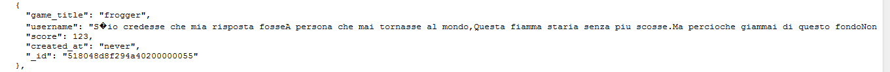
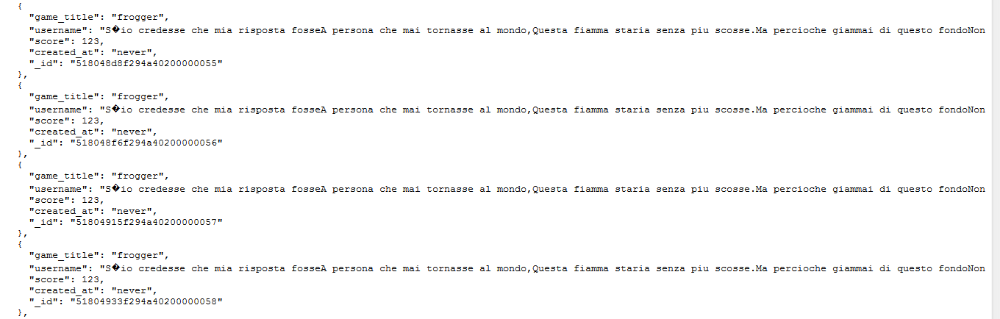

Security Assessment of Scorecenter
COMP 20, Spring 2013 [Assignment 6]
Introduction
Ming Chow's COMP 20 students received the assignment of creating a Scorecenter web application. Students were required to write APIs enabling users to enter high scores for HTML5 web games, access all scores entered in the database, access the highest scores entered in the database, and search for a particular user's scores. Students ultimately made their Scorecenter applications accessible on Heroku.
We were hired to perform a security analysis of a particular student's Scorecenter application. Our investigation of this application is of great urgency, as this student has been contracted to provide a high-security score-tracking database application system for the upcoming International Online Tetris Olympiad; it is the hope of our client that our findings will enable him/her to meet the terms of this contract within the next four weeks. In this report, we present security weaknesses found and suggested improvements.
Methodology
Abstract of Findings
Let's get abstract...
Issues Found
Input Sanitization
Location:
- POST API for submitting score to Scorecenter
Severity of issue:
- HIGH [This vulnerability leaves the database wide open to attackers seeking to crash it; once the database is crashed, Scorecenter is dead in the water, and the International Online Tetris Olympiad is sunk.]
Description of issue:
- Although user input is sanitized insofar as an attacker may not input scripts or undeclared fields [fields other than username, game_title, score, and created_at], there is no limit to the length of strings submitted. An attacker may thus submit absurdly long string in the input fields and crash the database.
- EXAMPLE: I submitted a 'high score' containing T.S. Eliot's masterful modernist poem "The Love Song of J. Alfred Prufrock" as the username. Much as one may love seeing an eleven-odd page poem show up in a database, one must admit the dangerous inconvenience that this same poem poses in the context of database-crashing.
Images of woe and horror:
A wee bit of poetry...
...concatenated together...

Resolution of issue:
Lack of IP Address Monitoring
Location:
- POST API for submitting score to Scorecenter
Severity of issue:
- HIGH [This vulnerability allows an attacker to target Scorecenter repeatedly with any interruption, enabling him/her to find a security loophole and gain a foothold in pursuit of any given malevolent end.]
Description of issue:
- There is no limit to the number of times that a user from a particular IP address may attempt to post to Scorecenter. An attacker can continuously bombard Scorecenter with post requests -- sending, say, 5,000,000 requests in the span of a day -- because his/her IP address will never be blocked [temporarily or permanently] from the application.
- EXAMPLE: I wrote a bash script to repeatedly bombard Scorecenter with ridiculous post requests. I simply executed my script, sat back, and watched it fly, attacking the database in absurd ways at an absurd frequency.
Images of woe and horror:
A simple and dangerous script

Resolution of issue:
Risk of DDoS Attack
Location:
- JS file gfscorecenter.js [file containing all APIs for Scorecenter]
Severity of issue:
- MEDIUM [This vulnerability is of oscillating severity: During times of significant web traffic -- such as the finals of the International Online Tetris Olympiad -- life becomes more risky.]
Description of issue:
- This web application will be unable to withstand heavy user traffic. [Consider the classic example of a website 'going viral' via a platform such as Reddit. People flock to it in hordes... and it crashes.] Because this application is intended to be used for high-profile, high-traffic sporting and gaming events by technologically-oriented people, it is essential that its server be able to bear many, many requests from many, many users.
- Scorecenter is thus vulnerable to a distributed denial-of-service [DDoS] attack, in which attackers would seek to flood its server and take it down.
- SAMPLE SITUATION: Where Scorecenter to be further developed as -- or used in conjunction with -- a gambling service, attackers would have a distinct monetary interest in bringing it down. [Suppose Scorecenter profits five cents per bet placed; attackers seeking to develop a similar gambling site could benefit enormously from directing these customers to their own site.]
Resolution of issue:
Conclusion
Concluding...
Sarah McDaniel, supervisor of this analysis and author of this report, is reachable at Sarah.McDaniel@tufts.edu for questions, comments, further consultation, and estimates for future analyses.